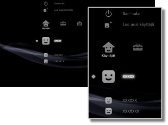

Käyttäjät > Käyttäjät-luokka
Käyttäjät-luokka
Voit luoda käyttäjiä tai sammuttaa PS3™-järjestelmän. Jos luot useita käyttäjiä, kunkin käyttäjän omat tiedot tallennetaan erikseen. Tällaisia tietoja ovat esimerkiksi PlayStationR3-muotoisten ohjelmistojen tallennetut tiedot,  (Ystävät)-toiminnon avulla lähetetyt ja vastaanotetut viestit ja
(Ystävät)-toiminnon avulla lähetetyt ja vastaanotetut viestit ja  (Internet-selain)-toiminnon kirjanmerkit.
(Internet-selain)-toiminnon kirjanmerkit.  (Käyttäjät) sisältää seuraavat kuvakkeet.
(Käyttäjät) sisältää seuraavat kuvakkeet.

 |
Sammuta | Sammuta PS3™-järjestelmä. |
|---|---|---|
 |
Luo uusi käyttäjä | Luo uusi käyttäjä. |
 |
(käyttäjätunnus) | Kirjaudu PS3™-järjestelmään. |
Vihje
Alla oleviin luokkiin kuuluvat kiintolevylle tallennetut tiedot näytetään kaikille käyttäjille. Jos tiedot poistetaan, toiset käyttäjät eivät voi nähdä niitä. Varo, ettet poista tärkeitä tietoja vahingossa.
- PlayStation®2- ja PlayStation®-ohjelmistojen tallennetut tiedot
- Valikon
 (Pelit) alla näkyvät pelit
(Pelit) alla näkyvät pelit  (Videot) -kohdassa näkyvät videotiedostot
(Videot) -kohdassa näkyvät videotiedostot (Musiikki) -kohdassa näkyvät musiikkitiedostot
(Musiikki) -kohdassa näkyvät musiikkitiedostot (Kuvat) -kohdassa näkyvät kuvatiedostot.
(Kuvat) -kohdassa näkyvät kuvatiedostot.
Huomautukset
- Jotkin PlayStation®2- ja PlayStation®-muotoiset ohjelmistot voivat käyttäytyä eri tavoin PS3™-järjestelmässä kuin PlayStation®2- tai PlayStation®-järjestelmissä, ja ne eivät ehkä toimi PS3™-järjestelmässä oikein.
- PlayStation®2-muotoisia ohjelmistoja ei myöskään voi käyttää joissakin PS3™-järjestelmissä. Lisätietoja on kohdassa [Toistettavat levytyypit], oman alueesi SCE-verkkosivustossa ja PS3™-järjestelmän mukana toimitetuissa asiakirjoissa.